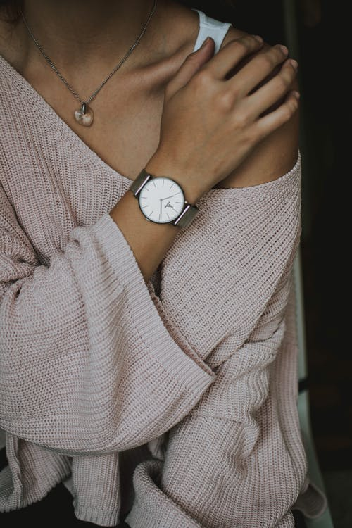
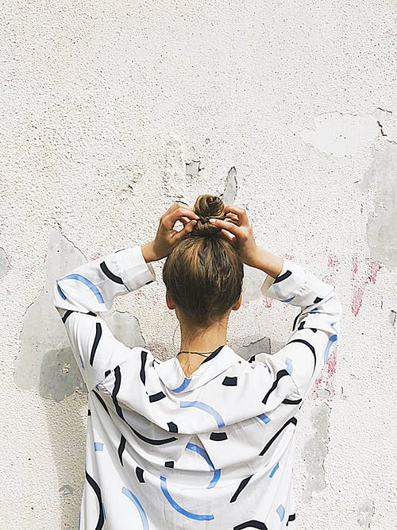

O outono está entre em nós e a estação, mais fresca que verão e menos cinza que o inverno, é perfeita para looks estilosos. De acordo com as Semana de Moda internacionais e as fashionistas mais antenadas, a temporada promete força nos acessórios, com combinações fora do óbvio. Pode tirar o lenço do armário e se prepare para usar as mangas bufantes, porque essas são apenas algumas das principais tendências que irão bombar no outono.
A moda outono 2021 cores mais claras e brancas aparece como opções para todos os gostos. às pálidas e adocicadas, passando, inclusive, pelos tons pasteis. A jovialidade do rose também continuará em alta, podendo fazer parte de looks com outras cores mais vibrantes.
Que os looks de outono 2021 são pura elegância todos concordamos, mas será que você sabe qual combinação valoriza a sua silhueta? Neste artigo você vai conferir os modelitos mais elegantes para o inverno. São dicas bem legais para você ter muito estilo na estação gelada. Confira galerias de fotos, dicas e inspirações para diversos tipos de combinações. Fique sabendo dos sapatos e cores que estão em alta e descubra o que mais combina com o seu estilo.